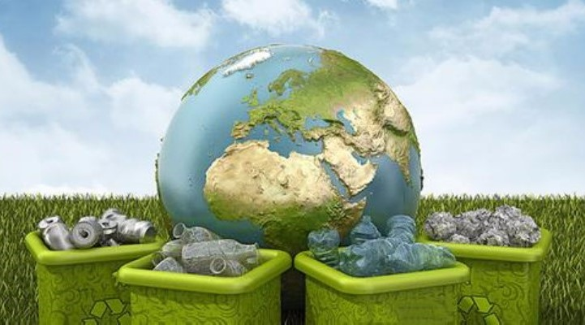
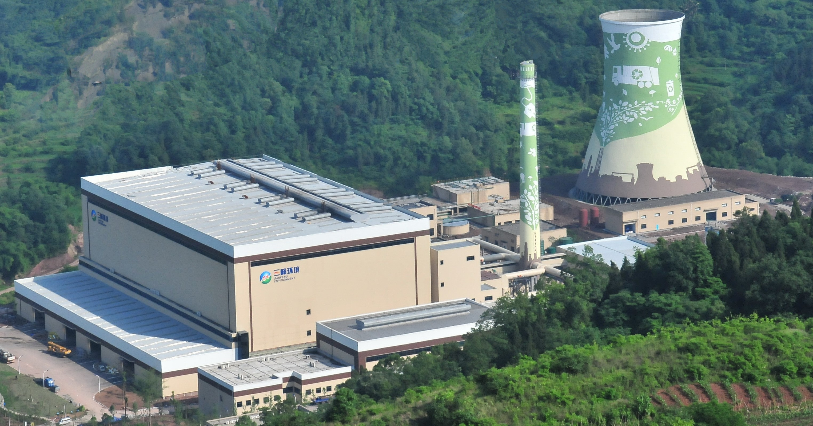

政府与企业
垃圾处理由谁来负责？
垃圾处理通常由政府或委托给专门的垃圾处理公司来负责。
在某些地区，政府机构直接负责垃圾处理。政府可能设立了相关的部门或机构，负责制定和执行垃圾处理政策、管理垃圾收集和处理的运营，以及监督和监管整个垃圾处理过程。
另外，政府也可以将垃圾处理的责任委托给专门的垃圾处理公司。这些公司通过与政府签订合同或获得相关的招标项目来提供垃圾处理服务。这些公司通常具有专业的设备、技术和人员，能够进行垃圾收集、分类、转运和处理工作。
政府部门做些什么？
政府部门职责
当涉及到垃圾处理时，政府在不同层级上扮演着重要的角色。这包括中央政府、地方政府以及各级政府的环境保护和城市管理部门。政府在垃圾处理中的角色是确保垃圾得到适当处理，维护环境卫生和公共健康。他们与垃圾处理公司、社区居民和其他利益相关方合作，共同努力实现可持续的垃圾管理和环境保护目标。

政策制定和法规管理
政府负责制定垃圾处理政策和制定相关法规。这些政策和法规旨在规范垃圾分类、收集、处理和处置的标准和程序，确保垃圾处理能够符合环保要求。
垃圾处理规划
政府制定城市或地区垃圾处理规划，根据人口数量、垃圾产量和资源情况，确定垃圾处理设施的布局、容量和位置。
管理和监督
政府部门负责监督和管理垃圾处理活动。他们可能批准和监管垃圾处理公司的运营，并确保其遵守环境法规和标准。政府还可能通过执法和检查来确保垃圾分类、收集和处理工作得到有效执行。
技术支持与研究
政府机构可能提供技术支持和研究，以改进垃圾处理技术和方法。政府可能鼓励研发环境友好型垃圾处理技术，并提供资金和奖励来支持相关的科研项目。
专业垃圾处理公司做些什么？
专业垃圾处理公司职责
专业垃圾处理公司通过私营或公共合资方式负责垃圾处理。这些公司根据政府给定的政策，根据市场需求，为他们的客户提供垃圾收集、运输和处理服务。他们设立复合处理厂（针对可回收、有害、湿垃圾），利用不同的技术手段对垃圾进行分类和处理，以此达到废物减少、资源化利用和环保等目的。

政策制定和法规管理
政府负责制定垃圾处理政策和制定相关法规。这些政策和法规旨在规范垃圾分类、收集、处理和处置的标准和程序，确保垃圾处理能够符合环保要求。
垃圾处理规划
政府制定城市或地区垃圾处理规划，根据人口数量、垃圾产量和资源情况，确定垃圾处理设施的布局、容量和位置。
管理和监督
政府部门负责监督和管理垃圾处理活动。他们可能批准和监管垃圾处理公司的运营，并确保其遵守环境法规和标准。政府还可能通过执法和检查来确保垃圾分类、收集和处理工作得到有效执行。
技术支持与研究
政府机构可能提供技术支持和研究，以改进垃圾处理技术和方法。政府可能鼓励研发环境友好型垃圾处理技术，并提供资金和奖励来支持相关的科研项目。
教育和宣传
政府负责向公众提供关于垃圾分类、环保意识等方面的教育和宣传。这可能包括发布垃圾处理指南、开展宣传活动、举办讲座等，以便提高公众对垃圾处理重要性的认识和参与度。
你知道垃圾处理方法有哪些吗？
垃圾处理方式
填埋
利用垃圾填埋场进行垃圾处置，填在填埋场中。填埋处理法的优点是占地面积小，成本低，但会释放有毒气体和渗出液体，对环境污染比较大，因此需要做好监管和防止漏油、漏渗等问题。
焚烧
将垃圾燃烧而成为灰渣、烟气和热能，以便进一步利用。焚烧处理法具有处理能力、减少体积、减少污染、回收能源等优点，但是需要注意控制产生的二氧化碳、二恶英等有害物质排放，以及保障设备安全管理和工作质量。
堆肥
利用微生物把生物质垃圾转换成有机肥料。堆肥处理法的优点为生态环保、资源化利用、肥料阳性、绿化美化等。需要注意的是，堆肥过程中需要严格控制氧气、温度、湿度等因素，以保证好的堆肥质量。
微生物厌氧处理
将垃圾与微生物一起放入封闭的容器中进行处理。微生物厌氧处理的优点是处理效率高、资源化利用、能收集可燃物质等，但是需要适当控制发酵过程中的过度温度，以及收集产生的气体。
在选择垃圾处理方法时，应该考虑其环保性、效率、成本、绿化效果、回收效果等多方面因素。同时，为了保护生态环境，减少资源浪费，垃圾分类在垃圾处理前就应该做好分拣和分类工作，避免不必要的污染和浪费。
教育和宣传